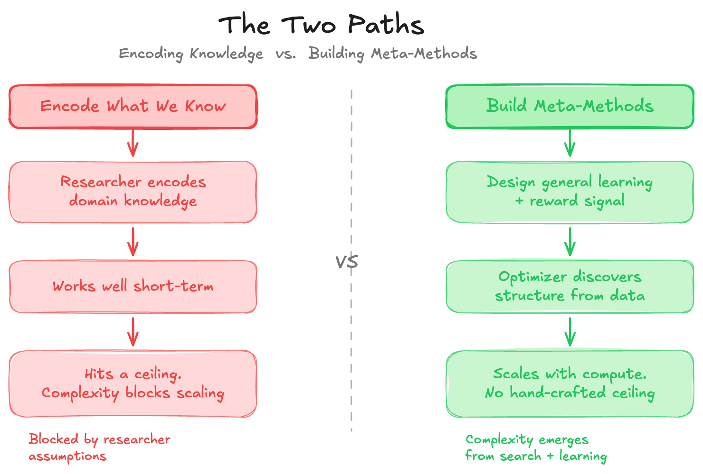
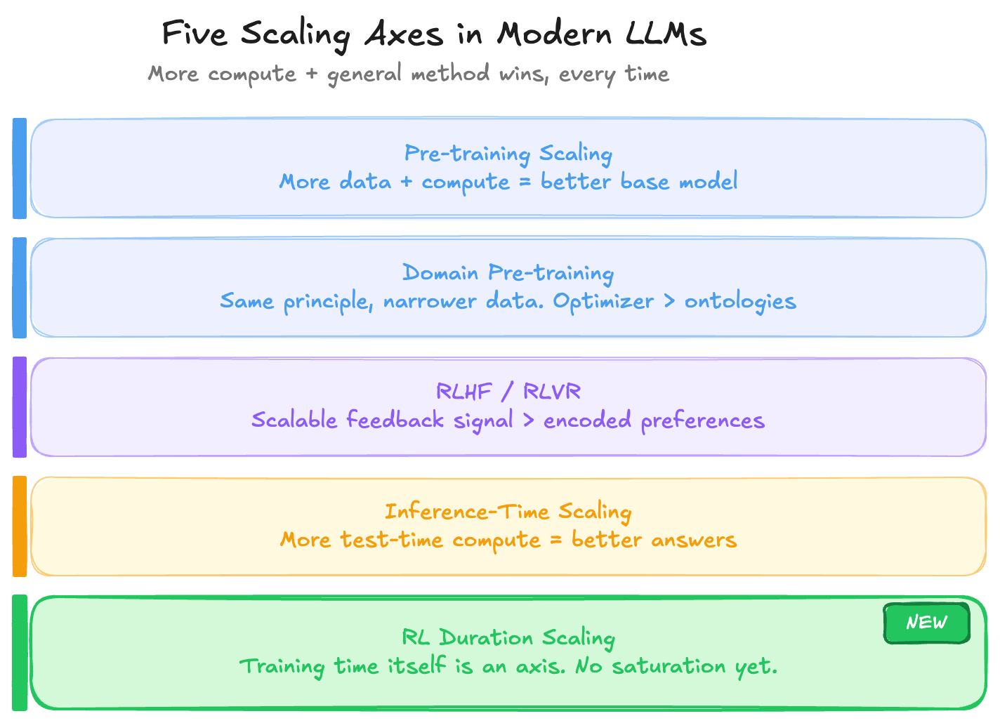
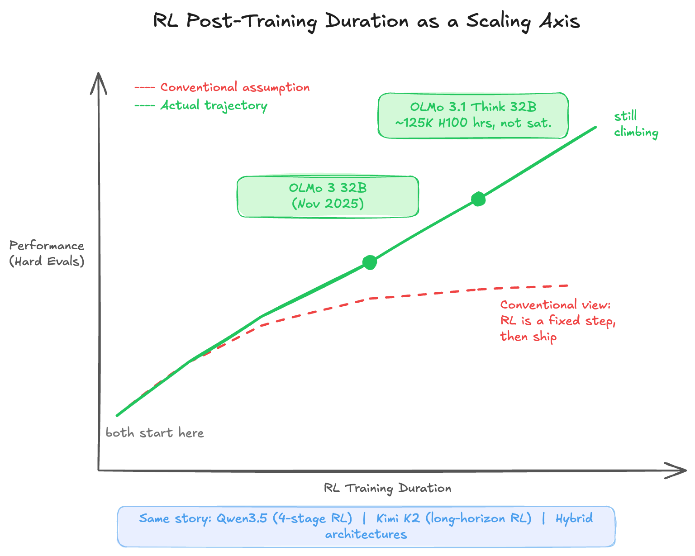

Rich Sutton's 2019 essay — The Bitter Lesson — is only about 1,200 words. It has aged better than most AI textbooks. The core claim: every time researchers encode what they already know into a system, compute-driven general methods eventually render that effort obsolete. The researchers feel productive, but they're building ceilings. The methods that win long-term are the ones designed to discover, not contain.
"We want AI agents that can discover like we can, not which contain what we have discovered."
— Rich Sutton
What's striking is that this lesson keeps repeating — not just once across the history of AI, but continuously, inside the modern LLM stack itself. Each new scaling axis that has emerged over the last few years is a fresh instance of the same principle playing out.
The Core Insight
The pattern Sutton documents across 70 years of AI research is consistent. Researchers build chess engines with hand-crafted evaluation functions; they get outperformed by engines that search deeper. They build speech systems with phonological rules; they get outperformed by systems trained on raw audio. They build vision pipelines with hand-engineered features; they get outperformed by convolutional networks trained end-to-end.
The failure mode isn't incompetence — it's that encoding existing knowledge feels productive. It produces near-term gains. It satisfies the instinct to be clever. But every encoded assumption is a constraint on what the optimizer can discover. The moment compute scales up enough, the unconstrained learner catches and surpasses the carefully crafted system.

This is not an anti-knowledge argument. Sutton is not saying domain knowledge is useless. He's saying it shouldn't be baked in as a structural constraint. The right place for knowledge is in shaping the problem setup — the reward signal, the data distribution, the evaluation criteria — not in pre-specifying the solution.
Five Axes Where This Plays Out in Modern LLMs
The modern LLM stack can be read as a series of places where the Bitter Lesson keeps asserting itself. At each stage, there was a temptation to encode structure — and in each case, the winning approach was to let the optimizer do more of the work.

1. Pre-training Scaling Laws
The most direct instance. More compute on more diverse data produces better base models — not because anyone encoded language rules, syntax trees, or world models, but because gradient descent over a large enough corpus discovers structure on its own. The Chinchilla paper formalized the relationship, but the principle had been visible since GPT-2. These laws still hold at the frontier. The only practical constraint is the cost of running experiments at scale large enough to map the curve.
2. Continuous Pre-training
Domain-adaptive pre-training follows the same logic, just with a narrower data distribution. Rather than a researcher encoding medical ontologies or legal taxonomies directly into model weights, you run more compute on domain data and let the optimizer extract the structure. The result consistently outperforms approaches that inject symbolic domain knowledge as architectural constraints. Same principle, smaller scope.
3. RLHF and RLVR
Post-training initially looked like the stage where human knowledge would be injected most directly — preferences, reward models, carefully curated feedback. RLVR (reinforcement learning from verifiable rewards — math correctness, code execution, formal proofs) is the purer version: the signal comes from ground truth, not human taste. There's no need to encode what a correct answer looks like; correctness is verified mechanically. The more the reward signal can be grounded in verifiability, the less human judgment becomes a bottleneck — and the more the system can scale without hitting the ceiling of annotator capacity.
4. Inference-Time Scaling
The reasoning models of 2024–2025 — o1, R1, DeepSeek — are perhaps the clearest recent demonstration. Rather than encoding reasoning strategies, you give the model more compute at test time and let it search: chain-of-thought, tree search, self-reflection. The Bitter Lesson playing out in inference rather than training. And the results have been consistent: more search compute produces better answers on hard reasoning tasks, without the researcher specifying how the reasoning should proceed.
5. RL Post-training Duration
This is the newest axis, and arguably the most underappreciated one. The conventional view treated RL post-training as a discrete pipeline step — run it, evaluate, ship. What the past year has revealed is that RL training duration is itself a scaling dimension. The model doesn't saturate at some natural endpoint; performance continues climbing as long as the RL job keeps running on challenging tasks.
RL Duration: The Emerging Frontier
The clearest evidence for RL duration scaling comes from Ai2's OLMo work. OLMo 3 32B was released in November 2025. Rather than declaring the RL phase complete, Ai2 simply left the same job running — 224 GPUs, continuing on the same objective. Over the next three weeks, performance on hard evaluations (AIME, competitive coding) kept climbing steadily. That extended run became OLMo 3.1 Think 32B, at roughly 125,000 H100 GPU hours. At that point the model still showed no signs of saturation.

Other labs tell the same story at different scales and from different angles.
Qwen3 / Qwen3.5 used a four-stage RL pipeline spanning reasoning quality, thinking versus non-thinking mode fusion, and general instruction following across over 20 task domains. Qwen3.5 then scaled further by expanding RL coverage across virtually every environment and task they could construct, deliberately prioritizing difficulty and generalizability over benchmark optimization. The emphasis on hard and diverse tasks reflects an understanding that the optimizer needs breadth to avoid overfitting to narrow reward signals.
Kimi K2 / Kimi Linear scaled RL with a focus on long-horizon reasoning — tasks that require maintaining coherent chains of reasoning across many steps, not just producing correct answers to individual questions. This is a harder target for the reward signal to specify, which makes it a cleaner test of whether general RL can discover structure that hand-crafted approaches struggle to encode.
Hybrid architectures — OLMo Hybrid, Qwen3.5's design, Kimi Linear — are also worth noting here. More expressive model classes give the optimizer a larger hypothesis space to work in. Rather than constraining the learner's representational capacity, you build a richer architecture and let RL find what fits. That's the Bitter Lesson at the architectural level.
Where the Compute Goes Next
The consistent picture across all five axes is that each time a new place to put compute has been identified — pre-training, domain adaptation, post-training, inference — the question has quickly become: how long does scaling hold? And the answer has repeatedly been: longer than expected, and longer than the previous axis suggested it would.
RL duration feels like we're still early on that curve. The OLMo result suggests frontier-class reasoning capability may not require frontier-class model size — it may require sustained RL training on the right task distribution. That's a different and arguably more accessible scaling lever than raw pre-training compute.
The broader point is that we're not running out of places to put compute. We're discovering new axes. Each axis is, in Sutton's framing, another instance of general methods winning over encoded structure. The optimizer keeps finding things we wouldn't have thought to specify. The practical constraint may not be diminishing returns — it may simply be the cost and infrastructure required to run experiments at these scales. The scaling curves haven't bent; we just can't always afford to extend them.
Key Takeaways
- The Bitter Lesson is recursive. It doesn't just apply to the history of AI — it applies within each new paradigm, including the current one. Each component of the LLM stack has been an instance of compute + general methods outperforming encoded knowledge.
- RL post-training is not a fixed step. Duration is a scaling axis. Models trained on hard, diverse tasks continue improving well past what conventional pipelines allow.
- Hybrid architectures are the architecture-level version of the same lesson. Give the optimizer a more expressive model class, and it discovers better solutions than constrained designs permit.
- The right place for knowledge is in problem setup, not solution structure. Reward signals, data curation, task difficulty — these shape what the optimizer learns without capping what it can discover.
- We're not running out of axes. Each time a scaling limit looked near, a new dimension appeared. RL duration is likely not the last one.
Sutton's framing is sometimes read as pessimistic — a rebuke to the researchers who wasted effort. It's more useful read as a navigational heuristic: when designing a system, ask whether you're encoding a ceiling or building a ladder. The compute will keep scaling. The question is always where to direct it to maximize what the optimizer can discover.
References
- The Bitter Lesson — Rich Sutton, 2019
- Training Compute-Optimal Large Language Models (Chinchilla) — Hoffmann et al., 2022
- OLMo: Open Language Model — Ai2
- Qwen3 Technical Blog — Qwen Team, 2025
- Kimi K2: Open Agentic Intelligence — Moonshot AI, 2025
- DeepSeek-R1: Incentivizing Reasoning Capability in LLMs via Reinforcement Learning — DeepSeek, 2025
Citation
If you found this post helpful and would like to cite it:
Cited as:
Haseeb, Raja. (Mar 2026). "The Bitter Lesson Keeps Winning". Personal Blog.
https://pytholic.github.io/posts/the-bitter-lesson/
Or in BibTeX format:
@article{pytholic2026bitterlesson,
title = "The Bitter Lesson Keeps Winning",
author = "Haseeb, Raja",
journal = "pytholic.github.io",
year = "2026",
month = "Mar",
url = "https://pytholic.github.io/posts/the-bitter-lesson/"
}